FIELD1
港町アデン
エンカウント率0%物語の始まりの町。難破した主人公が流れ着き、行方不明のアギーレ院長を探すことになる。
名前 建物・場所→ ほかの FIELD へ1メインイベント1サブイベント1宝箱・落ちている物
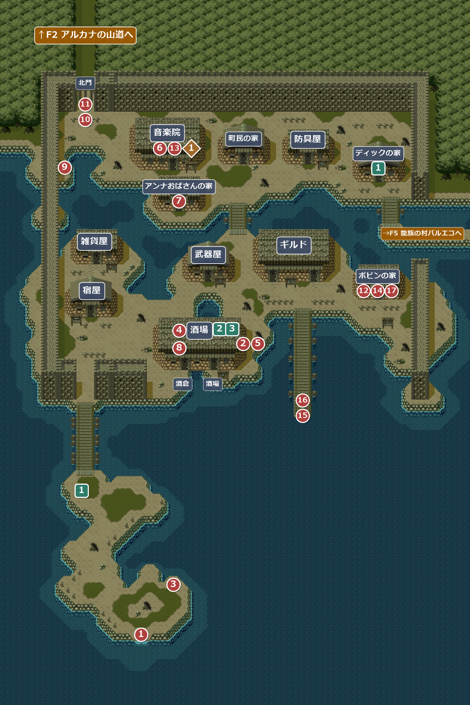
イベント
1
浜辺に打ち上げられる
場所: 南の小島(X46-48 Y215-217)
ゲーム開始。乗っていた船が難破し、ボートで脱出した主人公は、アデンの南の小島に打ち上げられる。
次へ橋を渡って町へ。北門は鍵がかかっていて外に出られない。
2
酒場のケンカ(1回目)
場所: 酒場の入口の右(X84 Y117)に近づくと発生 → 酒場の中
客に連れられて酒場に入ると、酔っ払いが暴れている。町の顔役のボビンに「あいつを、取り押えてくれんか？」と頼まれるが、どちらを選んでも最後は酔っ払いに海へ放り込まれる。
| 選んだ答え | セリフ |
|---|---|
| やってみよう | 酔っ払い「なんだ、小僧、俺様とやるって言うのか？」 主人公「むっ…！！」(組み合うが、投げ飛ばされる) |
| いや… | 酔っ払い「フン、汚らしい歌うたいだな…いやなニオイがするぜぇ…けけけ」(酔っ払いのほうから寄ってきて、つまみ出される) |
次へ③へ(自動)
3
海に放り込まれる
場所: 南の小島の浜辺(X56-60 Y199)
小島の浜辺に流れ着く。そばに落ちていたオールの破片を拾う(棍棒がわりの武器)。
入手 オールの破片
オールの破片
バグ「こいつは棍棒がわりに使えるぞ。」の「棍」がフォントに無い字(JIS第2水準)のため表示されず、「 棒がわりに」と不自然に空白が開く。
次へもう一度酒場へ。
4
ケンカの仲裁
場所: 酒場の中(X42 Y19-25)
もう一度酒場に入ると、今度は主人公が酔っ払いを投げ飛ばす。お礼に、連絡船の船主のボビンから、数日前から行方不明の音楽院のアギーレ院長を探してくれたら無料で船を出す、と約束される。ボビンの家は桟橋の東。
入手 青色の小ビン×3
青色の小ビン×3
！戦闘ではなく演出なので、③で拾ったオールの破片を装備していなくても(捨ててしまっても)勝てる。
次へ音楽院で院長のことを聞く(⑥)。
5
酒倉が開く
場所: 酒場の入口の右(X84 Y117)
④のあとで酒場の前を通ると、男が酒倉の鍵を開ける。これ以降、酒場の左の扉(酒倉)に入れるようになる。
次へ音楽院で院長のことを聞く(⑥)。
6
音楽院の僧
場所: 音楽院(部屋108)の僧
④のあとで僧に話すと、アギーレ院長は行方不明で、近所のアンナおばさんが院長の姿を見たらしい、と教えてくれる。
次へアンナおばさんの家へ。
7
アンナおばさんの話
場所: アンナおばさんの家(部屋106)
院長を見たのは息子のペグで、ペグは友達とかくれんぼをして遊んでいるはず、と教えてくれる。
次へペグを探す(酒倉の地下)。
8
かくれんぼのペグ
場所: 酒倉の地下(部屋103)
かくれんぼ中のペグを見つける。⑦のあとで話すと、院長は怖い顔で北西の門から町を出て、門の鍵を海へ放り投げた、と教えてくれる。
次へ北門の近くの浅瀬へ。
9
錆びた鍵
場所: 北門の西の浅瀬(X20-22 Y57)
⑧のあとで浅瀬を調べると、錆びた鍵が見つかる。
入手 錆びた鍵
錆びた鍵
次へ北門へ。
10
11
F3 アルカナの洞窟で院長を探したあと
12
ボビンへの報告
場所: ボビンの家(部屋105)
ボビンに院長の最期を伝えて銀の音叉を見せると、音叉はそのまま主人公の物になる。さらに音楽院の鍵を渡され、院長の私室の物は自由に持っていってよい、と言われる。
入手音楽院の鍵
次へ音楽院の院長の私室へ(⑬)。
13
院長の私室行かなくても先へ進める
場所: 音楽院の左奥の扉(X6 Y11)→ 院長の私室(部屋115)
ボビンには「中の物を取ってきてから船を出す」と言われるが、じつは寄らなくても⑭に進める。
- 扉 … 音楽院の鍵を「使う」と開く(鍵はなくなる)。調べるだけでは開かない。
- 机の上の日記 … 「一番右端の棚に、力の楽譜がある」と書かれている。
- 右端の棚 … 日記を読んだあとで調べると、歌を2つ覚える(読む前は何もない)。
入手 炎の槍の歌
炎の槍の歌 氷の矢の歌
氷の矢の歌
次へボビンの家へ。
14
船を出してもらう
場所: ボビンの家(部屋105)
⑫のあと、いったん家を出てからボビンに話しかけ「船を出してくれ」を選ぶ。ホイヒューは出航の準備のため先に桟橋へ向かう。
離脱ホイヒュー
バグボビンの「では棧橋に行きなさい。」の「棧」がフォントに無い字(JIS第2水準)のため表示されず、「 橋に行きなさい」と不自然に空白が開く(ほかの台詞は表示できる「桟橋」)。
次へ桟橋の先へ。
15
サブイベント
2
酒場の歌を教わる
場所: 酒場(部屋101)の男(X26 Y19)
時限F8 クーテの村から夜にリンリン草の草原へ出発するまでに教わっておくこと(当分先)。それを過ぎると二度と教えてもらえない。
F3 アルカナの洞窟でアギーレ院長に会った後、酒場の男に話すと「アギーレさんがここでよく歌っていた曲」として、酒場で歌う古謡を教えてくれる(それまでは別の話をするだけ)。
入手 酒場の歌
酒場の歌
3
カウンターで歌う
場所: 酒場(部屋101)のバーテン(X32 Y19)
バーテンは「なにか、景気のいい歌を歌ってくれよ！」と言う。カウンターのバーテンの正面で酒場の歌を使うと、歌の報酬がもらえる(1回だけ)。
報酬が出るのはバーテンの正面に立ったときだけ。右に半マスずれても報酬は出るが、左に半マスずれると、バーテンとは話せても歌の報酬はもらえない。
入手お金(5 × 主人公のレベル + 0〜20 GOLD)
宝箱・落ちている物
1
宝箱
場所: 院長の私室(部屋115)の左(X6-8 Y15)
「箱を開けると、中にはのどあめが入っていた。」
入手 のどあめ×3
のどあめ×3
F4 ボビンの船から港へ戻ったあと
16
17
ボビンの頼み
場所: ボビンの家(部屋105)
「みょうな嵐が進路を妨害した」と聞いたボビンは、隣の龍族の村バルエコのモルガンを訪ねてほしい、と頼む。バルエコは見知らぬ者を嫌うが、ボビンの名前を出せば門は開かれるという。ホイヒューが再び仲間になる。このとき雇った仲間が1人以下なら、路銀の100GOLDももらえる。
加入ホイヒュー
入手100GOLD(条件あり)
次へ→F5 龍族の村バルエコへ(町の東の出口)。
サブイベント
1
ディックのリュートの飾り
場所: 南の小島の浜辺(子供・ディック)→ ディックの家(部屋104)
時限F3 アルカナの洞窟でアギーレ院長に会う前に、子供 → ディックの順に話しておかないと二度と起きない。話を聞いておけば、買うのは後でもよい。
浜辺の子供に話すと、ディックおじさんは木工細工が得意だと教えてくれる。そばにいるディックに話すと、リュートに合う飾りを売ってもいいから家まで来て、と言われる。ディックの家に入って奥まで進むと、後からディックが入ってきて、10GOLDでリュートの指板を８コース指板から１２弦指板にしてくれる。お金が足りないときや断ったときは、もう一度家の奥まで進めば買える。
入手 １２弦指板
１２弦指板
バグもっと良い指板(１Ｍ指板など)をつけた後で買うと、１２弦指板に置き換わって LUTE が下がる。元の指板は戻らない。
部屋
101アデンの酒場
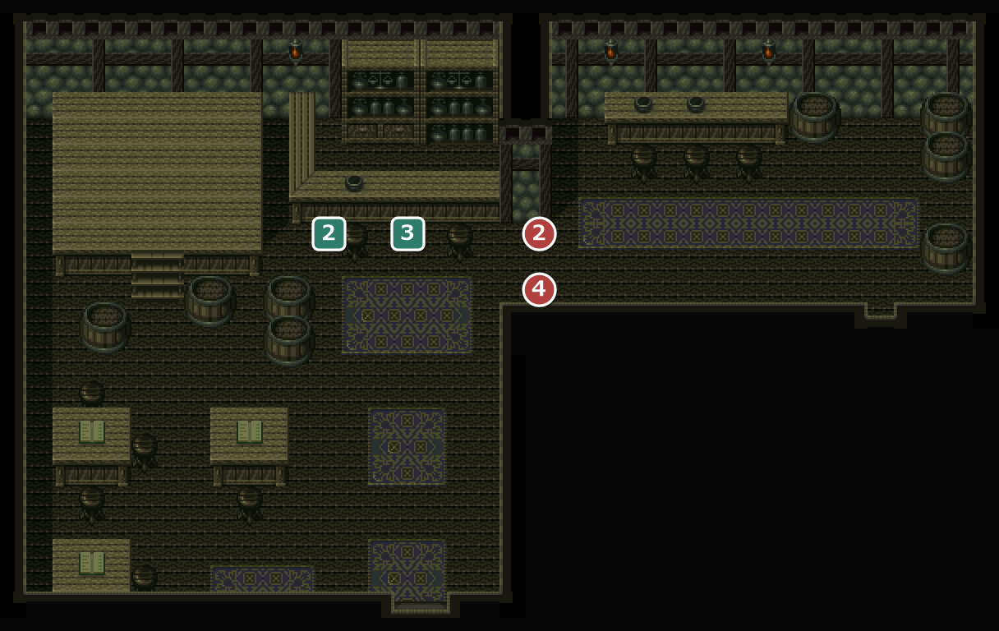
元のマップは 40×30 マス。下約5マスの何もない部分を切って載せている。
24酒場のケンカ 2酒場の歌を教わる 3カウンターで歌う
102103アデンの酒倉・アデンの酒倉の地下
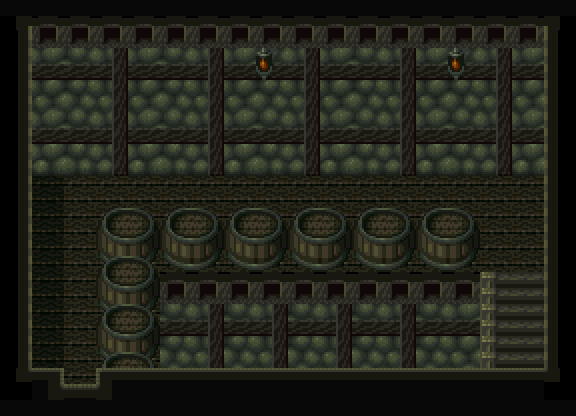
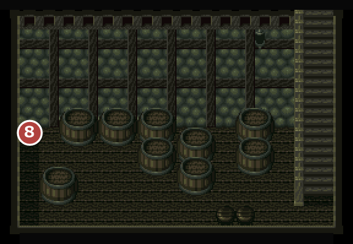
1025のあとで入れる。奥の階段から地下へ。
1038ペグが隠れている。
108115アデンの音楽院・アデンのアギーレ院長の私室
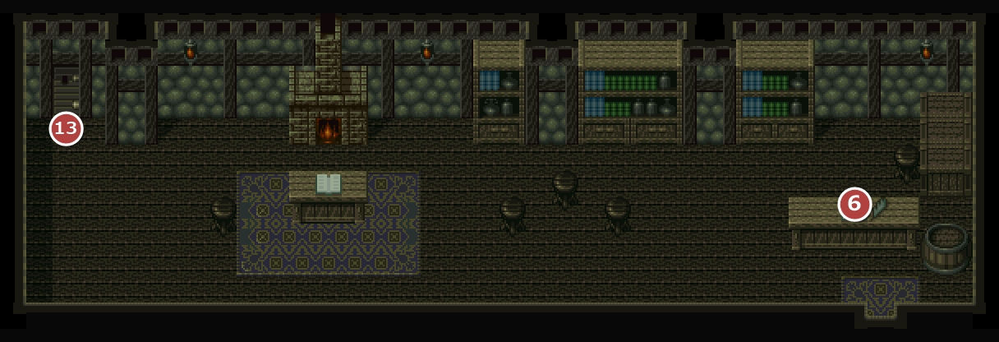
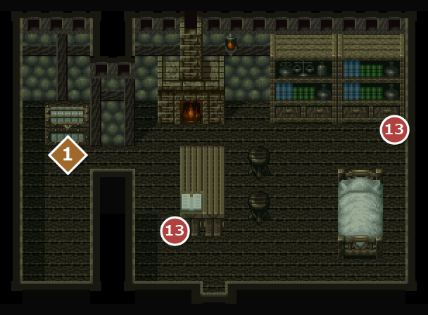
1086僧の話を聞く。13左奥の扉は院長の私室(音楽院の鍵が必要)。
11513日記・力の楽譜 1のどあめ×3
106アデンのアンナおばさんの家
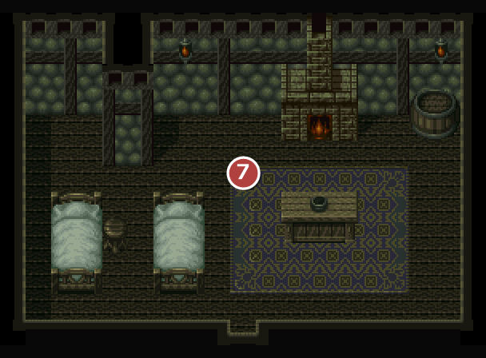
7アンナおばさんの話を聞く。
105アデンのボビンの家
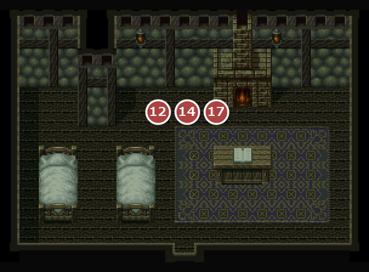
121417ボビンとの会話で話が進む。
104アデンのディックの家
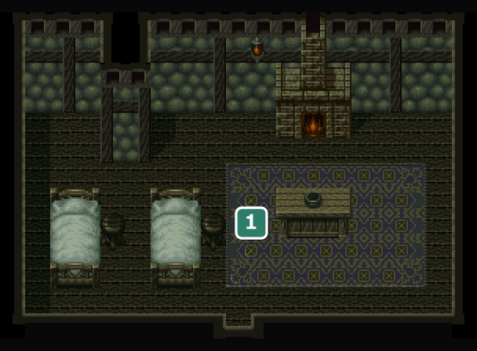
1リュートの飾りを買える。
109114アデンの宿屋・アデンの宿屋の２階

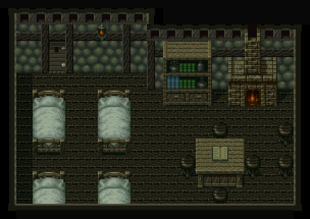
109宿泊は1人 2GOLD。冒険の記録(セーブ)もここ。
料金は1人あたりなので、仲間が増えるほど宿代が上がる(4人なら8GOLD)。
114宿屋に泊まるとここで眠る。
！外観は平屋建てなのに、泊まって寝室(２階)へ移るときに階段の効果音が鳴る。
110アデンの武器屋
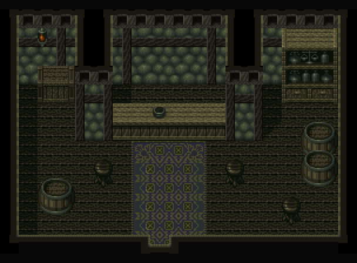
| 商品名 | 値段 | |
|---|---|---|
| 石製のナイフ | 10 | |
| グラディウス | 30 | |
店の奥の男が、話すたびに武器の系統を1つずつ解説してくれる。
113アデンの防具屋

| 商品名 | 値段 | |
|---|---|---|
| ターバン | 5 | |
| ベレー | 10 | |
| クロースアーマー | 30 | |
| サンダル | 10 | |
112アデンの雑貨屋

| 商品名 | 値段 | |
|---|---|---|
| 赤色の小ビン | 2 | |
| 青色の小ビン | 5 | |
| のどあめ | 10 | |
| しびれ薬 | 15 | |
116アデンのギルド
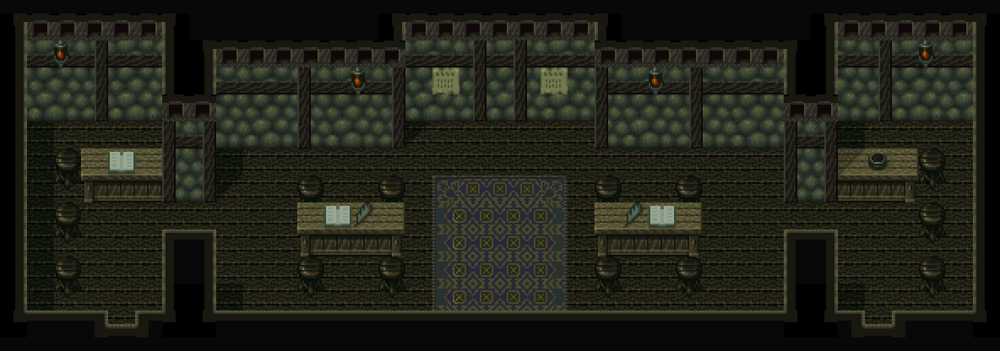
107アデンの町民の家

イベントなし(竜族の話を聞ける)。
没イベント情報
- 没デバッグモードの名残らしきもの(「ショウコを消す」「ウルフ＝３」・船で各地へ移るテスト) … X46-48 Y227(南の小島の南端)に残っている。デバッグルームとは別もの
- 没宿屋の２階の、もう1つの「泊まる」演出 … マスが無いため発生しない
- 没ギルドのスリム・ドムカの「残念だけど、あなたとは気が合わないみたいだ…」 … 出る条件が無い台詞